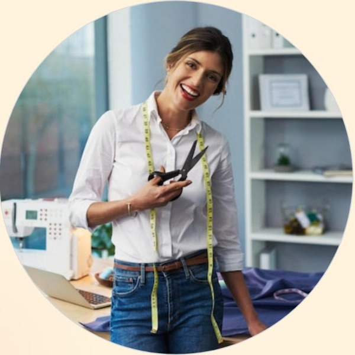
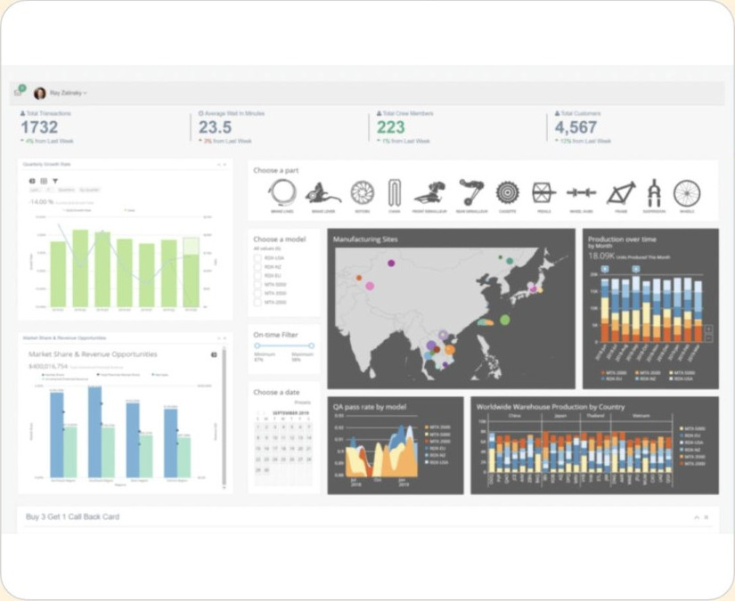
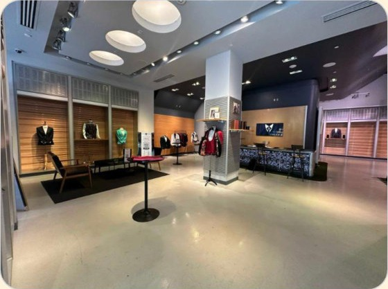
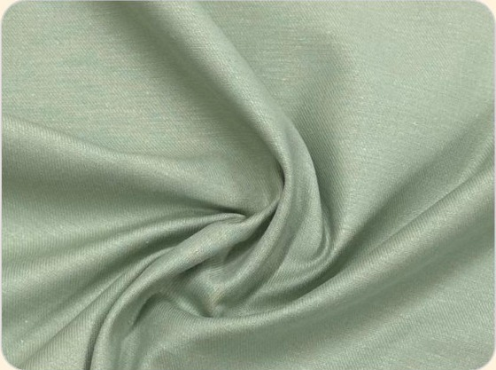

El Gran Almacén de Silencios
Las pequeñas empresas almacenan volúmenes inmensos de datos operativos que nadie sabe interpretar narrativamente.
De la historia a la pantalla
Construyendo historias transformadoras en el análisis de datos para emprendedores.

Johana, 39 años
Propietaria de una tienda de moda sostenible. Valora la autenticidad y el impacto social. Su mayor miedo es que su negocio se vuelva "hielo": una estructura fría y puramente numérica.
Mundo Ordinario: Basaba sus decisiones en el "brillo en los ojos" de sus clientas, ignorando el silencio de las hojas de cálculo.
Las pequeñas empresas almacenan volúmenes inmensos de datos operativos que nadie sabe interpretar narrativamente.
Sin una traducción humana de los datos, las decisiones se basan en el miedo al riesgo o en la inercia del pasado.
Llamada a la Aventura
El contador entrega el informe final: "Si no cambiamos la estrategia, cerramos". Johana se enfrenta al rechazo inicial: "¿Números? Los números son fríos, mi negocio tiene alma".
El silencio de su tienda vacía fue su mentor más elocuente. Entendió que un sueño quebrado no cambia el mundo.
Johana decide cruzar el umbral y aceptar que los datos son el mapa hacia su verdadero propósito.
Sensibilizar la Estadística
En lugar de una "caída del 10%", el sistema cuenta: "Tu cliente fiel busca alternativas porque siente que tu oferta no evoluciona".
Es una solución que humaniza la analítica predictiva para facilitar decisiones atrevidas.

Revisión de 3 años de datos históricos de ventas.
Identificación de la demanda oculta de Loungewear.
Enfrentar los sesgos estéticos de la fundadora.
Lanzamiento de línea basada en evidencia.
"Sus aliados fueron los datos: revelaron que las clientas buscaban comodidad, no gala".
"Dejar ir el lino por el algodón recuperado fue mi mayor prueba. Entendí que el verdadero arte es servir a mi comunidad, no a mi propio ego."
El crecimiento exponencial tras alinear la pasión con la evidencia del mercado.


"No le temas a los números. Ellos son la voz de tus clientes cuando tú no estás escuchando."
Storytelling para Emprendedores
Especialización en Big Data | UCompensar
Jhon Anderson Martinez García
Cristian Dayan Sánchez Villamil
Camilo Andres Hernandez Arevalo
https://img.freepik.com/premium-photo/portrait-woman-scissors-fashion-design-business-workshop-with-entrepreneur-smile-seamstress-tape-measure-table-laptop-sewing-machine-with-sustainable-textile-boutique-creation_590464-343990.jpg
Source: www.freepik.com
https://static.vecteezy.com/system/resources/thumbnails/077/553/145/small/employee-sitting-on-office-desk-holding-running-sand-clock-and-deadline-paper-on-the-table-time-management-concept-photo.jpg
Source: www.vecteezy.com
https://cdn.prod.website-files.com/67af3db5bb3b892e61258bd4/684150a03f50d03f6f023a30_analytics-dashboard.png
Source: www.domo.com
https://media.istockphoto.com/id/1490342808/photo/female-ecommerce-business-owners-celebrating-their-success.jpg
Source: www.istockphoto.com
https://img.peerspace.com/image/upload/f_auto,q_auto,dpr_auto,w_3840/sfihsglwcuhntdwnopue
Source: www.peerspace.com
http://naturesfabrics.com/cdn/shop/files/sage-organic-cotton-twill-fabric-31014.heic?v=1744845703
Source: naturesfabrics.com